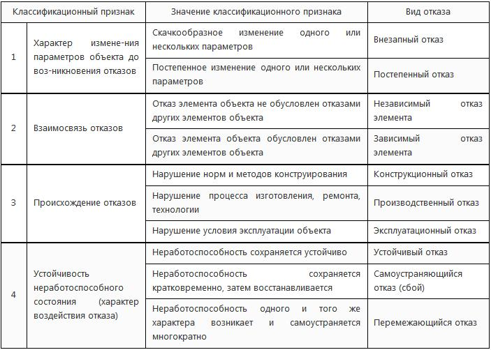

Введение
Проблема надёжности
информационных систем (ИС) является комплексной, системотехнической.
Производственный опыт и теоретические исследования свидетельствуют, что
нельзя добиться значительного увеличения надёжности отдельными
разрозненными мероприятиями. Совместное проведение многих мероприятий
объединенных в систему не только увеличивает эффективность каждого из
них, но и даёт возможность получить качественно новые результаты.
Надёжность ИС определяется надёжностью её элементов и аппаратуры,
надёжностью программного обеспечения, управляющего выполнением
вычислительного процесса, а также использованием средств контроля и
восстановления системы. Пользователя компьютерной техники интересует
только получение правильных результатов вычислений за заданное время.
Для достижения этой цели необходимо, чтобы всё названные составляющие
обладали необходимой надёжностью. Для разработки эффективной системы
мероприятий по обеспечению надёжности ИС нужно ясное понимание
студентами идей, лежащих в основе многих различных методов оценки и
повышения надёжности, позволяющее им трезво оценить возможности и
особенности применения этих методов.
Источник:
https://studizba.com/lectures/10-informatika-i-programmirovanie/350-nadezhnost-informacionnyh-sistem/4757-predislovie.html© СтудИзба
Проблема надёжности
информационных систем (ИС) является комплексной, системотехнической.
Производственный опыт и теоретические исследования свидетельствуют, что
нельзя добиться значительного увеличения надёжности отдельными
разрозненными мероприятиями. Совместное проведение многих мероприятий
объединенных в систему не только увеличивает эффективность каждого из
них, но и даёт возможность получить качественно новые результаты.
Надёжность ИС определяется надёжностью её элементов и аппаратуры,
надёжностью программного обеспечения, управляющего выполнением
вычислительного процесса, а также использованием средств контроля и
восстановления системы. Пользователя компьютерной техники интересует
только получение правильных результатов вычислений за заданное время.
Для достижения этой цели необходимо, чтобы всё названные составляющие
обладали необходимой надёжностью. Для разработки эффективной системы
мероприятий по обеспечению надёжности ИС нужно ясное понимание
студентами идей, лежащих в основе многих различных методов оценки и
повышения надёжности, позволяющее им трезво оценить возможности и
особенности применения этих методов.
Источник:
https://studizba.com/lectures/10-informatika-i-programmirovanie/350-nadezhnost-informacionnyh-sistem/4757-predislovie.html© СтудИзба
Проблема
надёжности информационных систем (ИС) является комплексной, системотехнической.
Производственный опыт и теоретические исследования свидетельствуют, что нельзя
добиться значительного увеличения надёжности отдельными разрозненными
мероприятиями. Совместное проведение многих мероприятий объединенных в систему
не только увеличивает эффективность каждого из них, но и даёт возможность
получить качественно новые результаты. Надёжность ИС определяется надёжностью
её элементов и аппаратуры, надёжностью программного обеспечения, управляющего
выполнением вычислительного процесса, а также использованием средств контроля и
восстановления системы. Пользователя компьютерной техники интересует только
получение правильных результатов вычислений за заданное время. Для достижения
этой цели необходимо, чтобы всё названные составляющие обладали необходимой
надёжностью. Для разработки эффективной системы мероприятий по обеспечению
надёжности ИС нужно ясное понимание студентами идей, лежащих в основе многих
различных методов оценки и повышения надёжности, позволяющее им трезво оценить
возможности и особенности применения этих методов.
· рост сложности
аппаратуры и появление сложных высокопроизводительных компьютерных систем КС;
·
медленный рост уровня надежности комплектующих элементов;
· увеличение важности
выполняемой аппаратурой функций;
· усложнение условий эксплуатации и др.
Надежность компьютеров и КС определяется, с одной стороны, отсутствием отказов,
сбоев и ошибок в работе устройств, с другой возможностью восстановления
аппаратуры и вычислительного процесса. Основными задачами теории надежности
являются:
· методы анализа надежности элементов и систем;
· установление видов
количественных показателей надежности;
· выработка методов аналитической
оценки надежности;
· разработка методов оценки надежности по результатам
испытаний;
· оптимизация надежности на стадиях разработки и эксплуатации.
При
определении основных терминов и понятий в области надежности (например, отказ,
восстановление, само понятие надежности и др.) будем следовать нормативно-техническим
документам системе государственных стандартов «Надежность в технике»,
описываемая ГОСТ.24.701-86. Основным понятием в теории надежности является
понятие системы. Под системой понимают совокупность элементов,
взаимодействующих между собой в процессе выполнения заданных функций. Например,
в качестве систем могут рассматриваться КС, вычислительный комплекс,
автоматическая система управления движением космического корабля, судна,
микропроцессорная система и др. Объекты, образующие системы представляют собой
элементы системы. Элементом системы называют часть системы, которая имеет
самостоятельную характеристику надежности, используемую при расчетах и
выполняющую определенную функцию в интересах системы. Примерами элементов для
систем, перечисленных выше, могут служить соответственно ЗУ-КС, мини-микро ЭВМ
вычислительного комплекса, исполнительный механизм рулевого привода и т.д.
Каждый из этих элементов можно рассматривать в качестве системы, состоящей из
более мелких элементов. Элементы и системы могут находится в двух состояниях:
работоспособном и неработоспособном.
Работоспособным называется такое состояние
системы (элемента), при котором они способны выполнить заданные функции,
сохраняя значения заданных параметров в пределах установленных
нормативно-технической документацией (НТД).
Неработоспособным называется
состояние системы, при котором значение хотя бы одного параметра,
характеризующего способность выполнять заданные функции, не находится в
переделах, установленных, нормативно-технической документацией.
Событие, заключающееся в нарушении работоспособности
системы, т.е. в переходе её из работоспособного в неработоспособное состояние,
называется отказом. Отказы объектов могут классифицироваться по многим
признакам, например по характеру возникновения, внешним проявлениям, способам
обнаружения. Приведем классификацию отказов по основным признакам (табл. 1).

При
анализе надежности конкретного объекта классификация его отказов позволяет
выявить причины отказов и найти пути повышения надежности. Отметим, что в общей
массе отказов в вычислительных машинах и микропроцессорных системах преобладают
сбои, т.е. самоустраняющиеся отказы. Под сбоем логического элемента КС
понимается непредусмотренное изменение состояния этого элемента, после которого
работоспособность самовосстанавливается (без проведения ремонта). Сбои приводят
к кратко-временному нарушению работоспособности, они опасны для компьютеров,
КС, любых ИС так как приводят к искажению информации и к неправильному
функционированию системы. На
основании использования понятий работоспособности и отказа сформулируем понятие
надежность.
Основные стандартизованные
определения показателей надежности
Надежность – свойство объекта (ИС) сохранять
во времени в установленных пределах способность выполнять требуемые функции в
заданных режимах и условиях применения, технического обслуживания, ремонтов,
хранения и транспортирования. Надежность является комплексным свойством
включающим в себя безотказность, ремонтопригодность и сохраняемость.
Безотказность – свойство системы или элемента непрерывно сохранять
работоспособное состояние в течение некоторого времени или некоторой наработки.
Под наработкой понимают объем работы объекта (системы).
Сохраняемость –
свойство системы непрерывно сохранять исправное, работоспособное состояние в
течение всего времени хранения. Ремонтопригодность – свойство системы или
элемента, заключающееся в приспособлении к предупреждению, обнаружению и
устранению причин возникновения отказов путем проведения ремонтов и
технического обслуживания.
Объекты делятся на восстанавливаемые и
невосстанавливаемые, в зависимости от того какое решение должно быть принято в
случае отказа объекта. Таким образом можно видеть, что понятие надежности
является фундаментальным понятием, которое охватывает все стороны технической
эксплуатации элементов и систем. В свою очередь надежность является составной
частью более широкого понятия – эффективности. Под эффективностью понимается
свойство системы (элемента) выполнять заданные функции с требуемым качеством.
Средства повышения надежности ИС
В настоящее время,
можно выделить несколько основных направлений работ по повышению надежности ИС
и микропроцессорных систем.
1. В первую очередь надежность ИС достигается за
счет использования в ней высоконадежных элементов. Это достигается применением
в устройствах ИС интегральных схем с высокой степенью интеграции (интенсивность
отказов в ИС 10-6÷10-8 1/ч), использованием оптических элементов, а также
внедрением новых типов печатных плат, контактных соединений, новых технологий
ИС и т.д.
2. Вторым направлением повышения надежности являются
обеспечение оптимальных режимов работы элементов. Большое значение при этом
имеет выбор коэффициента нагрузки по тепловому, механическому и радиационному
режиму. Режимы зависят от конструкции устройств, от принятых технических
решений, которые необходимо учитывать в процессе проектирования.
3. Эффективным
средством повышения надежности технических систем является введение
избыточности или резервирования. Резервирование – применение дополнительных
средств и возможностей с целью сохранения работоспособного состояния объекта
при отказе одного или нескольких его элементов. В компьютерах, КС используются
различные виды резервирования: структурное, временное, функциональное,
информационное и программное.
4. Эффективным методом повышения надежности
является восстановление отказавших устройств. Здесь необходимо решить задачи,
связанные с обнаружением отказа и с поиском отказавших элементов. Эффективность
диагностирования повышается при использовании автоматизированных систем
контроля. Одним из средств повышения надежности является уменьшение времени восстановления.
Время восстановления сокращается за счет обеспечения доступности всех узлов
устройства для осмотра, т.е. определяется ремонтопригодностью разрабатываемых
конструкций. В настоящее время широко используется модульно-блочный принцип
построения устройств, при которых замена отказавших элементов осуществляется
путем замены целых блоков. Снятые блоки уже вне изделия подлежат восстановлению
на специальных стендах с использованием контрольно-измерительных приборов.
5.
Для повышения надежности компьютеров, КС, ИС необходимо обеспечить надежность
программного обеспечения. Надежность программного обеспечения может быть
увеличена за счет программного резервирования и использования средств
автоматического контроля за правильностью выполнения вычислительного процесса.
Наличие системы автоматического контроля способствует увеличению готовности и
обслуживаемости ИС. 6. Одним из перспективных путей достижения высоких
показателей надежности ИС является их построение на базе использования
самопроверяемых средств функционального диагностирования, создание
самопроверяемых устройств и отказоустойчивых систем.
Из всех перечисленных
особо можно отметить проблему контроля и диагностирования. Анализ надежности
элементов ИС показывает, что примерно 40-45% всех отказов возникает из-за
ошибок на этапе проектирования, 20% от ошибок, допущенных при производстве, 30%
от неправильной эксплуатации и 5-10% от естественного износа и старения.
Рассмотрим основные методы обеспечения надежности на этапах жизненного цикла
ИС, которые могут быть включены в программы по обеспечению надежности.
Этап
составления технического задания. На этом этапе необходимо собрать все
имеющиеся данные об аналогичных или близких реализованных системах, а также
данные об условиях применения технических систем и требованиях предъявляемых к
ним (функциям, выполняемым рассматриваемой системой).
Этап эскизного проектирования. На этапе эскизного проектирования выбирается
элементная база, структура и организация разрабатываемой системы. Проводится
предварительный расчет надежности, принимается решение о резервировании
наименее надежных подсистем, а также решения о способах и организации
технического обслуживания (профилактических и ремонтных работ). Исследуется
вопрос о целесообразности и способах реализации методов автоматического
восстановления и отказоустойчивости в системе.
Этапы технического и рабочего
проектирования. На этих этапах проверяются и уточняются ранее принятые
технические решения. Основой для этого служат данные о надежности, полученные
на основании расчетов и результаты экспериментов над моделями, макетами,
опытными и промышленными образцами. Разрабатывается программное обеспечение
системы и проводится её проверка по тестам (путем имитационного моделирования
на модели разрабатываемой ТС).
Этап производства. Здесь основным является
технический контроль, охватывающий все стадии производственного процесса
(входной контроль качества комплектующих изделий, соответствия тех. документациям
печатных плат, блоков, устройств, схемных соединений и т.д.) и устранение
недостатков в разработке системы.
Этап эксплуатации. На этом этапе важными
являются контроль и обеспечение условий окружающей среды, квалификация и состав
обслуживающего персонала, организация и проведение технического обслуживания и
ремонтов в предусмотренном порядке. В период эксплуатации продолжается сбор
сведений об отказах аппаратуры и программного обеспечения. Эти сведения
передаются разработчикам с целью устранения причин отказов и уточнения исходных
данных для расчета надежности.
Проблема надёжности
информационных систем (ИС) является комплексной, системотехнической.
Производственный опыт и теоретические исследования свидетельствуют, что
нельзя добиться значительного увеличения надёжности отдельными
разрозненными мероприятиями. Совместное проведение многих мероприятий
объединенных в систему не только увеличивает эффективность каждого из
них, но и даёт возможность получить качественно новые результаты.
Надёжность ИС определяется надёжностью её элементов и аппаратуры,
надёжностью программного обеспечения, управляющего выполнением
вычислительного процесса, а также использованием средств контроля и
восстановления системы. Пользователя компьютерной техники интересует
только получение правильных результатов вычислений за заданное время.
Для достижения этой цели необходимо, чтобы всё названные составляющие
обладали необходимой надёжностью. Для разработки эффективной системы
мероприятий по обеспечению надёжности ИС нужно ясное понимание
студентами идей, лежащих в основе многих различных методов оценки и
повышения надёжности, позволяющее им трезво оценить возможности и
особенности применения этих методов.
Источник:
https://studizba.com/lectures/10-informatika-i-programmirovanie/350-nadezhnost-informacionnyh-sistem/4757-predislovie.html© СтудИзба